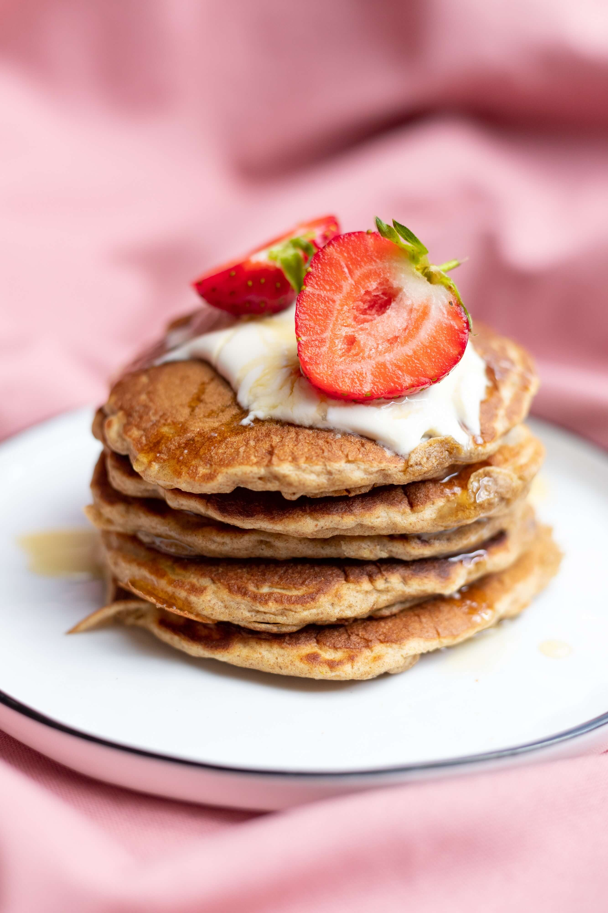

Classic Pancake

Description
Pancakes are America's favorite breakfast. Every kid at the breakfast table asks for pancakes. Pancakes when topped with syrups (maple or honey),
berries and whipped cream make for a perfect cheat day breakfast. Some people prefer a stack of pancakes while others combine it with
fried chicken. Whatever way you want to serve your pancakes, pancake recipe here is where you start. The recipe that we are presenting
today is a simple recipe with ingredients that you will find at your home everyday.
be ready by the time you are done listening to your 5 most favorite songs. So, turn up the stereo and follow along!
Prep time: 20 minutes
Cook time: 15 minutes
Ingredients
- All Purpose Flour - 2 cups
- Baking Powder - 1/2 tsp
- Vanilla Essence - 1 tsp
- Eggs - 2
- Milk - 1 1/2 cups
- Sugar - 2 tsp
- Butter - 3 tbsp
- Maple Syrup - 2-3 tsp (optional)
- Strawberries - 5-6 sliced (optional)
- Whipped Cream - As needed (optional)
Steps
- Combine all the dry ingredients - all purpose flour, baking powder and sugar in a large bowl
- Slowly add eggs, vanilla essence and milk while continuously mixing to avoid forming lumps.
- Melt the butter in a pan and add it to the batter slowly with continuing to mix the ingredients.
- When the batter is lump free and neither too flowing nor too thick, we are ready! (You can add a little milk if the batter is thick)
- In a pan, add a little oil or butter. Follow this by adding the batter on the pan so that it is not too thick.
- When the bubbles start to form on the top, it indicates that it's time to flip the pancake on the other side. Flip it and let it cook for another minute or so.
- Repeat steps 5 abd 6 to make as many pancakes as you want. Once that is done, stack them all up on a plate.
- Follow this by adding strawberried, maple syrup and whipped cream if you want to add a little more sweetness. Enjoy your pancakes!